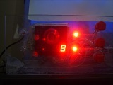

Vous n'êtes pas seuls dans l'Univers !

/
Le thermomètre numérique
Cette réalisation permet de connaître la température de deux sondes.
{kind=link}
1) Présentation
1-1) Version 1 - 2011
La version 1 du thermomètre numérique dispose de deux sondes de température, qui communiquent via un bus « I2C » avec un microcontrôleur gèrant l'ensemble.
L'objet mémorise les valeurs des températures minimales et maximales, pour chacune des deux sondes.
Ces valeurs peuvent être affichées et effacées à tout moment, en appuyant sur le bouton-poussoir qui correspond.
{kind=link}
{kind=link}
{kind=link}
{kind=link}
{kind=link}
{kind=link}

{kind=link}

2) Réalisation
2-1) Version 1 - 2011
2-1-1) Schéma électronique

|

|

|

|
| Phase 1 | Phase 2 | Phase 3 | Phase 4 |

|

|
 | |
| Phase 5 | Phase 6 | Phase 7 | Phase 8 |
{kind=link}
{kind=link}

{kind=link}
2-1-2) Codes sources

Thermomètre numérique : Fichiers C
Cible : PIC18F4550
Compilateur : MCC18
Télécharger le fichierEffectuez un clic droit, puis sélectionnez l'option « Enregistrer la cible du lien sous... », pour télécharger le fichier (20.92 Ko)
3) Sujets associés
L'objet comprend un microcontrôleur PIC18F4550 et deux sondes de température I2C TMP100.
Commentaires (0)
Ajouter un commentaire